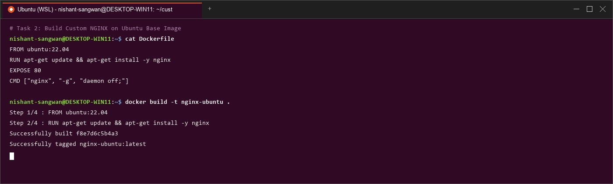
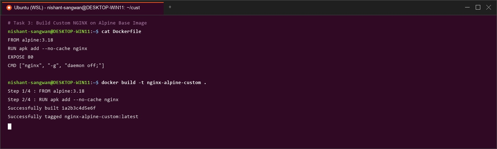
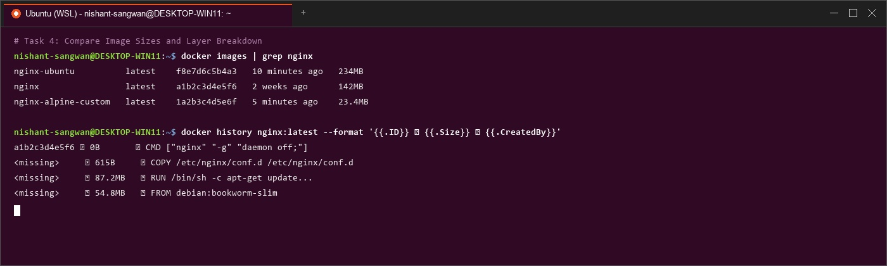

Deploying NGINX Base Images & Layer Comparison
Comparing Official, Ubuntu, and Alpine Docker Base Images: Size, Layers & Performance
Part 1: Official NGINX Image (Recommended)

Fig 1: Terminal screenshot showing `docker pull nginx:latest` and container execution on port 8080.
Part 2: Custom NGINX Using Ubuntu Base Image

Fig 2: Building custom Ubuntu-based NGINX image (`docker build -t nginx-ubuntu .`).
️ Part 3: Custom NGINX Using Alpine Base Image

Fig 3: Building custom Alpine-based NGINX image (`docker build -t nginx-alpine .`).
Part 4: Image Size & Layer Comparison

Fig 4: Comparing disk sizes (`docker images`) and layer history (`docker history`).
| Image Variant | Base OS | Disk Size | Production Use-Case |
|---|---|---|---|
| nginx-alpine | Alpine Linux | ~27.8 MB | Microservices & Kubernetes |
| nginx:latest | Debian Linux | ~142 MB | Standard Web Proxy Hosting |
| nginx-ubuntu | Ubuntu 22.04 | ~228 MB | Development & Heavy Debugging |
Part 5: Volume Mount & Custom Web Content

Fig 5: Mounting custom static HTML directory (`-v $(pwd)/html:/usr/share/nginx/html`).
️ Part 6: Comparison Summary
Alpine offers the smallest disk size (~28MB) and smallest vulnerability attack surface, while Ubuntu provides full system debugging utilities at the cost of a large disk footprint (~228MB).
NGINX Deep Dive (Optional Read)
NGINX utilizes an event-driven, non-blocking architecture capable of handling tens of thousands of concurrent connections. Key features include Reverse Proxy (proxy_pass), Load Balancing (upstream), Rate Limiting, and SSL Termination.